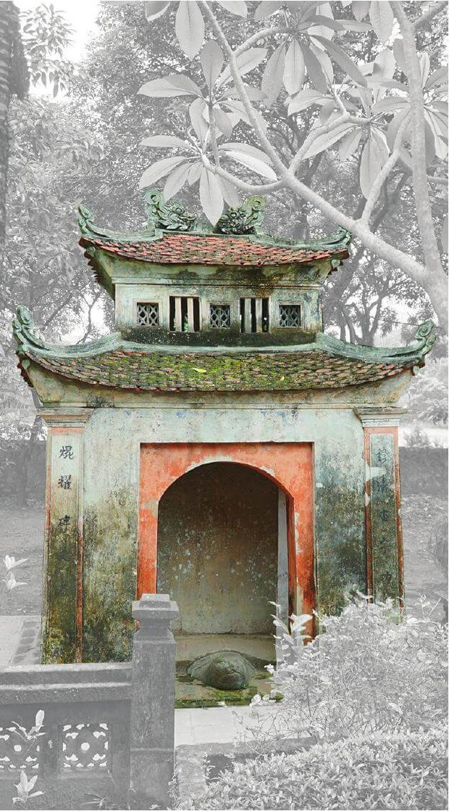

CỐ ĐÔ HOA LƯ
Deux pavillons des stèles du temple Lê

Le temple du roi Lê Đại Hành abrite actuellement deux stèles datant toutes deux de la période des Lê postérieurs (Hậu Lê - XVIIe siècle).
La stèle située sur le côté gauche du temple, intitulée "Trùng tu tạo tác thánh tượng tiền triều Lê Đại Hành hoàng đế bi ký tính danh" (Stèle consignant les noms relatifs à la restauration et à la création de la statue sacrée de l'Empereur Lê Đại Hành de la dynastie précédente), relate les travaux de restauration et de création de la statue sacrée.
Le pourtour de la stèle est sculpté de deux dragons se tournant vers le soleil (lưỡng Long chầu nhật). Le socle de la stèle est sculpté en gradins, lui conférant une allure solide et majestueuse.
L'inscription de la stèle indique : en 1611, les travaux de sculpture de 3 statues sacrées ont commencé, et se sont achevés en 1612 afin d'avoir un lieu de culte. Les prières de la nation et les vœux du peuple ont tous été exaucés, la grâce du saint empereur apportant la paix dans le monde.

La stèle située sur le côté droit du temple, intitulée « Tiền triều Lê Đại Hành hoàng đế bi ký » (Stèle de l'Empereur Lê Đại Hành de la dynastie précédente), repose sur le dos d'une tortue d'assez grande taille. La stèle est minutieusement sculptée, avec des motifs ornant ses deux faces. Grâce à ses lignes sculptées raffinées et à la richesse de ses thèmes, cette stèle est considérée comme un modèle type des motifs de stèles au Vietnam.
La stèle fait l'éloge du roi Lê Đại Hành, décrit comme un homme de clémence et d'un courage martial divin, doué de sagesse et de bravoure, intelligent. Il commandait 10 armées, et bien qu'investi d'un grand pouvoir, il a soutenu le jeune roi. Il a apporté la paix et l'abondance au peuple de toutes les directions, a pacifié le monde... Il a établi des institutions, encouragé l'agriculture, labouré personnellement le champ sacré (tịch điền), réduit les impôts, gracié les prisonniers, instauré l'ordre, renforcé la défense... On peut dire qu'il s'agit d'une œuvre monumentale que les générations futures doivent suivre, d'une vertu inoubliable pour l'éternité... c'est cela, la vertu méritoire.
Le contenu de la stèle, associé à ses motifs décoratifs exceptionnels, permet aux visiteurs de ressentir un esprit héroïque qui émane de toute la stèle, forçant l'admiration des générations futures pour l'éternité.